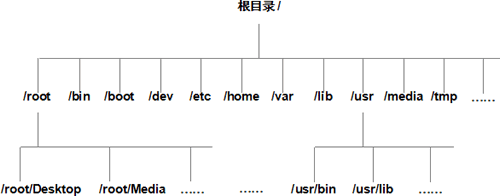

Linux绝对路径和相对路径详解
指明一个文件存放的位置，有 2 种方法，分别是使用绝对路径和相对路径。
我们知道，Linux 系统中所有的文件（目录）都被组织成以根目录“/”开始的倒置的树状结构，如图 1 所示。

图 1 Linux系统文件组织结构示意图
绝对路径一定是由根目录 / 开始写起。例如，使用绝对路径的表示方式指明 bin 文件所在的位置，该路径应写为 /usr/bin，测试代码如下：
[root@localhost ~]# bin
bash： bin： command not found <-- 没有找到
[root@localhost ~]# /usr/bin
bash: /usr/bin: is a directory <-- 是一个文件
和绝对路径不同，相对路径不是从根目录 / 开始写起，而是从当前所在的工作目录开始写起。使用相对路径表明某文件的存储位置时，经常会用到前面讲到的 2 个特殊目录，即当前目录（用 . 表示）和父目录（用 .. 表示）。
举个例子，当我们使用 root 身份登录 Linux 系统时，当前工作目录默认为 /root，如果此时需要将当前工作目录调整到 root 的子目录 Desktop 中，当然可以使用绝对路径，示例代码如下：
[root@localhost ~]# pwd <-- 显示当前所在的工作路径
/root
[root@localhost ~]# cd /root/Desktop
[root@localhost Desktop]# pwd
/root/Desktop
可以看到，通过使用绝对路径，我们成功地改变了当前工作路径。但除此之外，使用相对路径的方式会更简单。因为目前处于 /root 的位置，而 Desktop 就位于当前目录下，所以：注意，这里所使用的 pwd 和 cd 命令，目前只需知道它们的功能即可，具体用法会在后续文章中作详细讲解。
[root@localhost ~]# pwd <-- 显示当前所在的工作路径
/root
[root@localhost ~]# cd ./Desktop
[root@localhost Desktop]# pwd
/root/Desktop
再举一个例子，如果以 root 身份登录 Linux 系统，并实现将当前工作目录由 /root 转换为 /usr 目录，有以下 2 种方式：
#使用绝对路径
[root@localhost ~]# pwd <-- 显示当前所在的工作路径
/root
[root@localhost ~]# cd /usr
[root@localhost ~]# pwd
/usr
#使用相对路径
[root@localhost ~]# pwd <-- 显示当前所在的工作路径
/root
[root@localhost ~]# cd ../usr <-- 相对 root，usr 位于其父目录 /，因此这里要用到 ..
[root@localhost ~]# pwd
/usr
关注公众号「站长严长生」，在手机上阅读所有教程，随时随地都能学习。内含一款搜索神器，免费下载全网书籍和视频。

微信扫码关注公众号